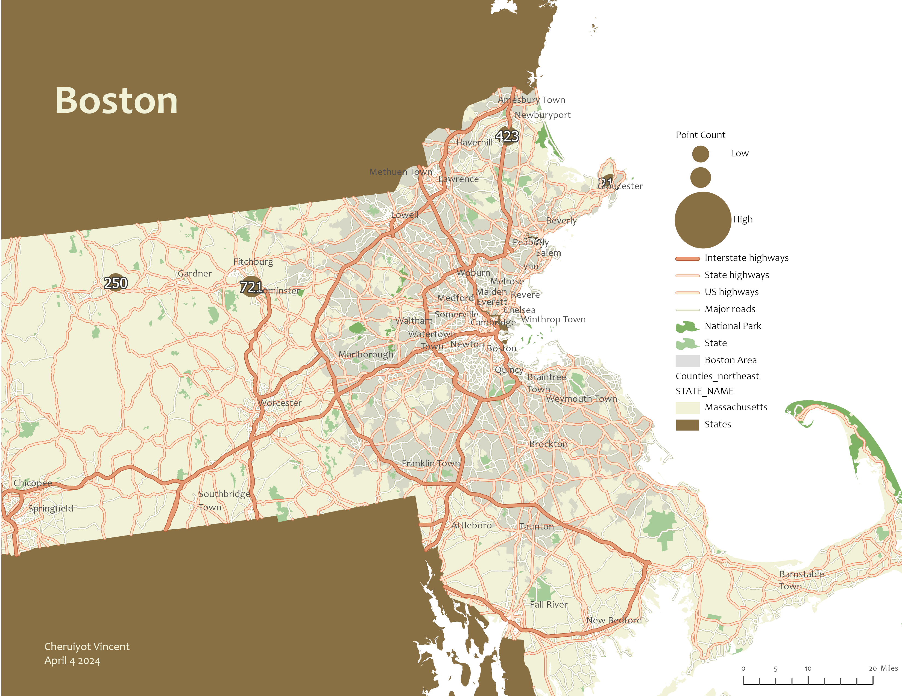

Home page
Static Maps
Data Visualizations
Web Maps
Contact
Cheruiyot Vincent - Static Map Portfolio
This page is an index of the maps I have authored in my learning, work, freelance, and hobbyist
A small multiple map of Earthquakes since 1989
Produced in ArcGIS. Data Sourced from Living Atlas.
A small multiple map of Earthquakes since 1989
Produced in ArcGIS. Data Sourced from Living Atlas.
An animation of Rondonia Brasil that compares how crop land and urban areas have changed between 1992 and 2020.
Produced in ArcGIS. Data Sourced from ArcGIS Living Atlas.Animation from Canva
A before-and-after street map of New York City with default levels before and after I had carried out advanced labeliing.
Produced in ArcGIS. Data from Esri

An animation of Rondonia Brasil that compares how crop land and urban areas have changed between 1992 and 2020.
Produced in ArcGIS. Data Sourced from ArcGIS Living Atlas.Animation from Canva
A before-and-after street map of New York City with default levels before and after I had carried out advanced labeliing.
Produced in ArcGIS. Data from Esri.